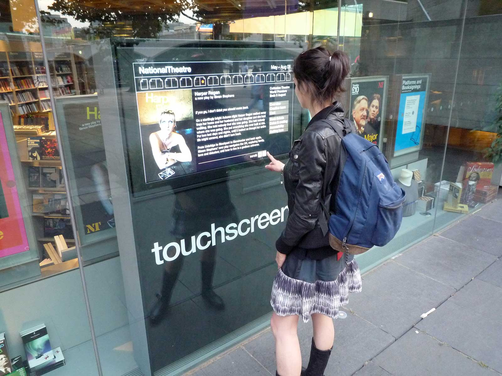

Large-format interactive touchscreens for the National Theatre on London's Southbank.
While working for the National Theatre in the Graphics Department we discovered a product which makes it relatively cheap and easy to create large-format, weather-proof touchscreens using just a basic TV and PC.
It is essentially a sheet of clear adhesive vinyl with very fine (almost invisible) wires running through it which are connected to a PC interface to create the touch-sensitive interface. The vinyl is stuck to the inside of a window and the TV mounted behind it. Using Adobe Flash, XML and ActionScript I designed and produced an interface to take advantage of this technology.
I liaised with NT's Engineering team to have built three enclosures where the PCs, TVs and touchscreen film could be neatly contained and installed in the foyer windows. My interface pulled in various feeds of information allowing passers-by to wander up and find various types of information about the theatres in a fun, engaging way.
One of the three touchscreens
Me testing the reliability of various interface components